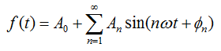
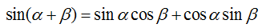
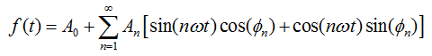
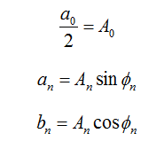
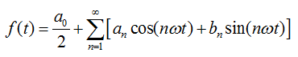

Fourier's Theorem: Any periodic wave with frequency f can be synthesized with sine waves having frequencies f, 2f, 3f, and so on (the harmonics or partials) by choosing unique amplitudes and phases for the harmonics.
| Amplitude | A1 | A2 | A3 | A4 | A5 | A6 | A7 | A8 | A9 | A10 | A11 | A12 | A13 | A14 | A15 | A16 |
|---|---|---|---|---|---|---|---|---|---|---|---|---|---|---|---|---|
| Sine | 1 | 0 | 0 | 0 | 0 | 0 | 0 | 0 | 0 | 0 | 0 | 0 | 0 | 0 | 0 | 0 |
| Triangle | 1 | 0 | 1/9 | 0 | 1/25 | 0 | 1/49 | 0 | 1/81 | 0 | 1/121 | 0 | 1/169 | 0 | 1/225 | 0 |
| Square | 1 | 0 | 1/3 | 0 | 1/5 | 0 | 1/7 | 0 | 1/9 | 0 | 1/11 | 0 | 1/13 | 0 | 1/15 | 0 |
| Ramp | 1 | 1/2 | 1/3 | 1/4 | 1/5 | 1/6 | 1/7 | 1/8 | 1/9 | 1/10 | 1/11 | 1/12 | 1/13 | 1/14 | 1/15 | 1/16 |
| Pulse Train | 1 | 1 | 1 | 1 | 1 | 1 | 1 | 1 | 1 | 1 | 1 | 1 | 1 | 1 | 1 | 1 |
| Phase | ϕ1 | ϕ2 | ϕ3 | ϕ4 | ϕ5 | ϕ6 | ϕ7 | ϕ8 | ϕ9 | ϕ10 | ϕ11 | ϕ12 | ϕ13 | ϕ14 | ϕ15 | ϕ16 |
|---|---|---|---|---|---|---|---|---|---|---|---|---|---|---|---|---|
| Sine | 0 | 0 | 0 | 0 | 0 | 0 | 0 | 0 | 0 | 0 | 0 | 0 | 0 | 0 | 0 | 0 |
| Triangle | 0 | 0 | 180 | 0 | 0 | 0 | 180 | 0 | 0 | 0 | 180 | 0 | 0 | 0 | 180 | 0 |
| Square | 0 | 0 | 0 | 0 | 0 | 0 | 0 | 0 | 0 | 0 | 0 | 0 | 0 | 0 | 0 | 0 |
| Ramp | 180 | 180 | 180 | 180 | 180 | 180 | 180 | 180 | 180 | 180 | 180 | 180 | 180 | 180 | 180 | 180 |
| Pulse Train | 90 | 90 | 90 | 90 | 90 | 90 | 90 | 90 | 90 | 90 | 90 | 90 | 90 | 90 | 90 | 90 |
The general formula is given below.

Using a trig identity,

the above equation can be expressed in terms of cosines and sine.

With the following assignments,

the familiar equation with cosines and sines is found.
